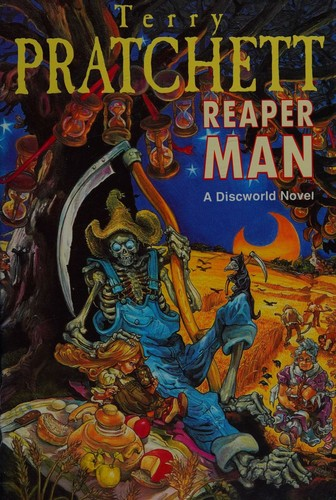
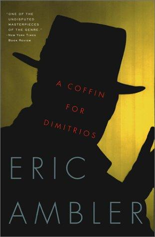
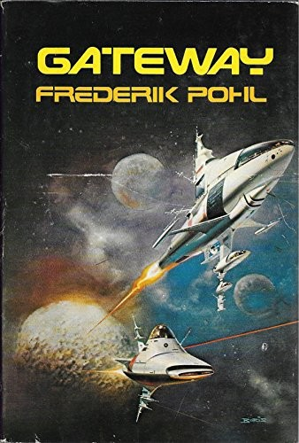

Recommendations for the week of 27 July 2026.
Three distinct growth edges this week. The translated non-Western literary shelf reaches a region it has never held — South Asia — with the first Hindi novel to win the International Booker, formally unruly and buoyant. Narrative nonfiction moves into anthropology, an untouched domain, via an intellectual history of how the very idea of "culture" was overturned. And rigorous true crime returns, but pitched at the epistemics of detection itself — how a whole culture learned to reason from clues — which connects straight to the criminology background and inference under uncertainty. The comfort picks spread across three well-loved veins: a standalone Discworld on why endings matter, the foundational anti-Bond thriller le Carré learned from, and a Hugo-and-Nebula hard-SF puzzle wrapped in a confessional frame — each fresh to the shelf, all fun, none sentimental.


